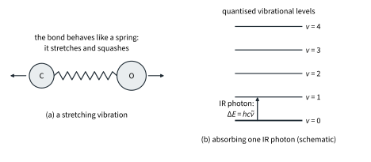
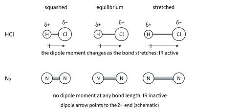
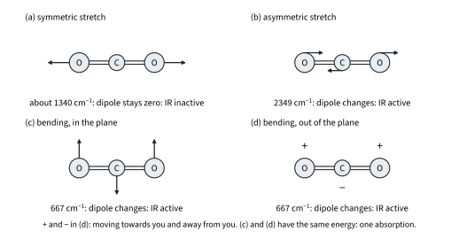
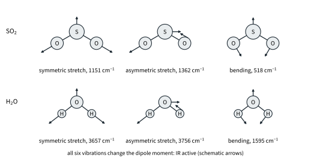
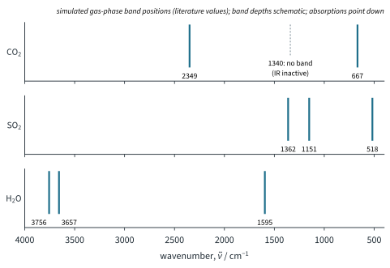
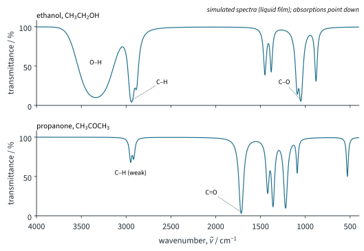
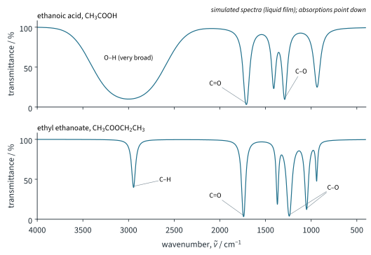
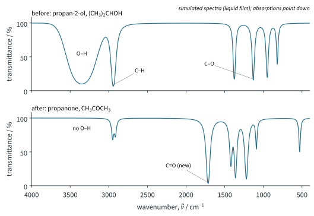
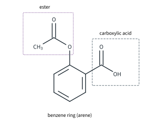
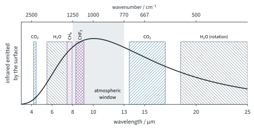

UV/vis and IR Spectroscopy 2
Chapter H3.2 · UV/vis and IR Spectroscopy Part 2
On this page
Introduction
Put your hand near a hot radiator without touching it and you feel the warmth: that is infrared (IR) radiation. Its photons carry far less energy than ultraviolet or visible photons, too little to move an electron into a higher orbital, but just the right amount to make the bonds in a molecule vibrate more strongly. Different bonds vibrate at different frequencies, so the infrared a compound absorbs is a record of the bonds it contains. That makes IR spectroscopy the quickest way to find out which functional groups are present in an organic compound.
The same physics decides which gases in the air keep the Earth warm. This Part explains where IR absorption comes from, which vibrations absorb, how to count the absorptions of a small molecule, how to read an IR spectrum with the Data Booklet table, and finally the role of polyatomic gases in the greenhouse effect. You need Topic 2 (bond polarity, dipoles and shapes) and H3.1 Part 2 (quantised vibrational levels and wavenumber) from earlier.
Key terms
You will use these terms throughout this Part.
| Term | Meaning |
|---|---|
| Stretching vibration | A vibration in which a bond length changes. In a symmetric stretch the bonds lengthen and shorten together; in an asymmetric stretch one lengthens while the other shortens. |
| Bending vibration | A vibration in which a bond angle changes. |
| Dipole moment | A measure of the separation of positive and negative charge in a molecule (Topic 2). |
| IR active | A vibration that changes the dipole moment of the molecule, and so can absorb infrared radiation. |
| IR inactive | A vibration that does not change the dipole moment, and so cannot absorb infrared radiation. |
| Wavenumber, ν̃ | The number of waves per cm: ν̃ = 1/λ, in cm−1. Proportional to the photon energy (H3.1 Part 2). |
| Transmittance | The percentage of the infrared that passes through the sample at each wavenumber; an absorption appears as a dip (a band pointing down). |
| Fingerprint region | The part of the spectrum below about 1500 cm−1, with many overlapping bands that are unique to each compound. |
| Greenhouse gas | A gas in the atmosphere that absorbs the infrared radiation given out by the Earth's surface. |
| Atmospheric window | The range of about 8–13 µm (about 1250–770 cm−1) in which carbon dioxide and water vapour absorb little of the infrared from the surface. |
Where IR absorption comes from
Think of a bond as a spring joining two balls (Fig 10(a)). Pull the balls apart and the spring pulls them back; squash them together and it pushes them apart. So the atoms of a molecule are always vibrating about their average positions, and each kind of vibration has its own natural frequency. A stiffer spring (a stronger bond) vibrates faster; heavier balls (heavier atoms) vibrate more slowly.
As H3.1 Part 2 showed, the energy of vibration is quantised: a molecule can have only certain vibrational energies, a ladder of levels (Fig 10(b)). An IR photon is absorbed only if its energy exactly matches the gap between two levels; the vibration then becomes more energetic (larger in amplitude).

IR spectra are plotted against wavenumber, ν̃ = 1/λ, in cm−1, from 4000 cm−1 on the left to 400 cm−1 on the right (2.5 to 25 µm). Because E = hcν̃, the wavenumber is proportional to the photon energy: higher wavenumber, more energy.
Worked example 1: how much energy does an IR photon carry?
Carbon dioxide absorbs strongly at 2349 cm−1 (literature value). Calculate the energy of one mole of these photons and compare it with the Data Booklet bond energy of C=O in CO2, 805 kJ mol−1.
(To answer this, you have to convert cm−1 to m−1 by multiplying by 100, then use E = hcν̃ and multiply by L.)
ν̃ = 2349 cm−1 = 2349 × 100 = 2.349 × 105 m−1
E = hcν̃ = 6.63 × 10−34 × 3.00 × 108 × 2.349 × 105 = 4.6722 × 10−20 J
per mole: (4.6722 × 10−20) × (6.02 × 1023) = 2.8127 × 104 J mol−1 = 28.1 kJ mol−1
That is about 3.5 % of the bond energy (28.1 / 805). An IR photon makes a bond vibrate more strongly; it is nowhere near enough to break it. Over the usual range, 4000 to 400 cm−1, IR photons carry 47.9 to 4.79 kJ mol−1, typically about ten times less than the UV and visible photons of Part 1 (about 150 to 900 kJ mol−1), and from about 3 to about 200 times less depending on the two photons compared.
Which bonds absorb at high wavenumber?
The spring picture predicts two trends, and the Data Booklet table bears them out:
- Stronger (stiffer) bonds absorb at higher wavenumber. Compare bonds between the same pair of atoms: C≡C (2150–2250) absorbs above C=C (1635–1690), and C=O (1640–1750) above C–O (970–1440 cm−1).
- Bonds to light atoms absorb at higher wavenumber. Bonds to hydrogen (C–H, N–H, O–H) all absorb above 2500 cm−1; a bond to a heavy atom such as Cl absorbs low, C–Cl at 700–800 cm−1.
Stretching and bending
It is easier to change an angle than to stretch a bond: think how much easier it is to bend a ruler than to stretch it. So in every molecule in this Part the bending vibrations lie at lower wavenumber than the stretches (for water, 1595 against 3657 and 3756 cm−1).
Which vibrations absorb infrared?
Infrared radiation is an oscillating electric field. It can push on a molecule, and so pump energy into a vibration, only if the vibration makes the molecule's charge distribution oscillate in step with it:
This is the rule that 11.5 met as a footnote (HFCs absorb infrared strongly through their C–F bonds): in H3 it is core.
Worked example 2: HCl, N2 and O2
Explain why hydrogen chloride absorbs infrared but nitrogen and oxygen do not.
(To answer this, you have to ask whether stretching the one bond changes the dipole moment.)
- HCl: chlorine is more electronegative than hydrogen, so the molecule is polar, Hδ+–Clδ−. When the bond stretches, the separation of the partial charges increases and the dipole moment increases; when it is squashed, the dipole moment decreases (Fig 11). The stretch changes the dipole moment, so it is IR active: HCl absorbs at 2886 cm−1 (literature value).
- N2 and O2: the two atoms are identical, so there is no dipole moment at any bond length. The stretch does not change the dipole moment (it stays zero), so it is IR inactive.1 All homonuclear diatomic molecules, such as H2, N2 and O2, have no IR absorption.

Counting vibrations and absorptions
How many vibrations does a molecule have? Each atom can move in three directions (x, y and z), so N atoms have 3N ways to move. Three of these move the whole molecule from place to place without changing its shape, and three rotate it (only two for a linear molecule: spinning a linear molecule about its own axis does not move any atom). What is left are the vibrations:
Worked example 3: carbon dioxide
Predict the number of IR absorptions of CO2, and identify the vibrations that give rise to them.
(To answer this, you have to count the vibrations, picture each one, and ask whether the dipole moment changes. Remember that CO2 is linear and, although each C=O bond is polar, the two bond dipoles cancel, so the molecule has no overall dipole moment.)
CO2 is linear with N = 3, so it has 3 × 3 − 5 = 4 vibrations (Fig 12):
- Symmetric stretch (about 1340 cm−1, literature value; it does not appear in the IR spectrum): both O atoms move out together and back together. The molecule stays symmetrical, the two bond dipoles still cancel, and the dipole moment stays zero: IR inactive.
- Asymmetric stretch (2349 cm−1): one C=O bond lengthens while the other shortens. The bond dipoles no longer cancel, so a dipole moment appears along the axis, first one way then the other: IR active.
- Bending in the plane (667 cm−1): the molecule bends into a shallow V, so a dipole moment appears at right angles to the axis: IR active.
- Bending out of the plane (667 cm−1): the same bend at right angles to the first one: IR active.

The two bends are the same motion in two perpendicular planes, so they have the same energy: they are degenerate (the word from H3.1) and give one absorption, at 667 cm−1. So CO2 has four vibrations but only two IR absorptions, at 2349 and 667 cm−1. (A vibration has an energy whether or not it is IR active: the symmetric stretch still happens, it just cannot absorb infrared.)
The symmetric stretch is inactive only because the two ends of CO2 are the same. If the two ends of a linear molecule are different, the bond dipoles are not equal and opposite, so even the "symmetric" stretch changes the dipole moment: it is IR active.
Worked example 4: sulfur dioxide and water
Predict the number of IR absorptions of SO2 and of H2O, and assign the literature wavenumbers: SO2 1362, 1151 and 518 cm−1; H2O 3756, 3657 and 1595 cm−1 (gas).
(To answer this, you have to notice that both molecules are bent (Topic 2), so they are non-linear and already have a dipole moment.)
Each has N = 3 and is non-linear: 3 × 3 − 6 = 3 vibrations: a symmetric stretch, an asymmetric stretch and a bend (Fig 13). Because the molecules are bent, every one of these changes the dipole moment. Even the symmetric stretch does: as both bonds lengthen together, the two bond dipoles, which do not cancel in a bent molecule, both grow, so their resultant grows. All three are IR active and none is degenerate, so each molecule shows three absorptions.

In each molecule the asymmetric stretch is a little higher than the symmetric stretch, and the bend is much lower than both, as the stretching and bending box predicts. Fig 14 shows the band positions of all three molecules on one wavenumber scale.

| Molecule | Shape | Vibrations | IR active | Absorptions / cm−1 |
|---|---|---|---|---|
| CO2 | linear | 3 × 3 − 5 = 4 | 3 (two degenerate) | 2: 2349, 667 |
| SO2 | bent | 3 × 3 − 6 = 3 | 3 | 3: 1362, 1151, 518 |
| H2O | bent | 3 × 3 − 6 = 3 | 3 | 3: 3756, 3657, 1595 |
| HCl | linear (diatomic) | 3 × 2 − 5 = 1 | 1 | 1: 2886 |
| N2, O2 | linear (diatomic) | 3 × 2 − 5 = 1 | 0 | none |
Further example: methane
CH4 (N = 5, tetrahedral) has 3 × 5 − 6 = 9 vibrations. Methane has no dipole moment, but most of its vibrations distort the tetrahedron and make one. Its high symmetry, however, groups the nine into sets of equal energy, and only two IR absorptions appear: a C–H stretch at 3019 cm−1 and a bend at 1306 cm−1 (literature values).2 So even a molecule with no dipole moment can absorb infrared, as long as some of its vibrations change the dipole moment: this matters for the greenhouse gases at the end of this Part.
Characteristic IR absorptions
In a larger molecule there are far too many vibrations to count, but a useful thing happens: a given bond absorbs in much the same range of wavenumber whatever molecule it is in. The Data Booklet lists these characteristic absorptions. Here is its table, "Characteristic infra-red absorption frequencies for some selected bonds", in full (s = strong, w = weak; each line of the booklet's entries for C–O, C=C and C–H has its own row here):
| Bond | Functional groups containing the bond | Absorption range (in wavenumbers) / cm−1 | Appearance |
|---|---|---|---|
| C–Cl | chloroalkanes | 700–800 | s |
| C–O | alcohol | 970–1260 | s |
| C–O | ether | 1000–1310 | s |
| C–O | ester | 1050–1330 | s |
| C–O | carboxylic acids | 1210–1440 | s |
| C=C | aromatic | 1475–1625 | s |
| C=C | alkenes | 1635–1690 | w |
| C=O | amides | 1640–1690 | s |
| C=O | ketones and aldehydes | 1670–1740 | s |
| C=O | carboxylic acids | 1680–1730 | s |
| C=O | esters | 1710–1750 | s |
| C≡C | alkynes | 2150–2250 | w unless conjugated |
| C≡N | nitriles | 2200–2250 | w |
| C–H | alkanes, CH2–H | 2850–2950 | s |
| C–H | alkenes, arenes, =C–H | 3000–3100 | w |
| N–H | amines, amides | 3300–3500 | w |
| O–H | carboxylic acid, RCO2–H | 2500–3000 | s and very broad |
| O–H | H-bonded alcohol, phenol, RO–H | 3200–3600 | s |
| O–H | free alcohol, RO–H | 3580–3650 | s and sharp |
Broad and sharp O–H bands
Why is the O–H band of an alcohol broad, and that of a carboxylic acid very broad? In a liquid, molecules are hydrogen-bonded to their neighbours, and every O–H bond is being pulled slightly by a hydrogen bond of a different strength. Each slightly different O–H bond absorbs at a slightly different wavenumber, so together they give one broad band (3200–3600 cm−1). In the gas or in a very dilute solution in a non-polar solvent the O–H groups are free, and the band is sharp and higher (3580–3650 cm−1). Carboxylic acids form especially strong hydrogen bonds: two molecules hold each other by two O–H···O hydrogen bonds (a hydrogen-bonded pair, or dimer), which weakens the O–H bond further and spreads its band from about 2500 to 3000 cm−1, often running into the C–H bands.
The fingerprint region
Below about 1500 cm−1 lie the bends and the stretches of single bonds between heavier atoms (C–C, C–O, C–N, C–Cl). They overlap and couple with each other in a pattern that is unique to each compound: the fingerprint region. Two different compounds almost never have identical fingerprint regions, so it is used to match a spectrum against a reference spectrum of a known compound, not to assign bands one by one. The C–O and C–Cl bands of the Data Booklet lie here and can still be used, because they are strong.
Interpreting IR spectra
Worked example 5: four compounds with oxygen
Figs 15 and 16 are simulated IR spectra of ethanol, propanone, ethanoic acid and ethyl ethanoate. Identify the characteristic absorptions in each and show how they distinguish the four compounds.
(To answer this, you have to work through the reading box: O–H first, then C=O, then C–O.)

| Compound | Band / cm−1 | Appearance | Bond (Data Booklet range / cm−1) |
|---|---|---|---|
| ethanol | 3340 | strong, broad | O–H, H-bonded alcohol (3200–3600) |
| 2945 | strong | C–H, alkane (2850–2950) | |
| 1050 | strong | C–O, alcohol (970–1260) | |
| no band near 1700 | no C=O | ||
| propanone | 1715 | strong | C=O, ketone (1670–1740) |
| 2950 | weak here | C–H, alkane (2850–2950) | |
| 1220 | strong | C–C–C skeletal vibration (inside the C–O ranges, but propanone has no C–O) | |
| no broad band above 3000 | no O–H |

| Compound | Band / cm−1 | Appearance | Bond (Data Booklet range / cm−1) |
|---|---|---|---|
| ethanoic acid | centre about 3000, spreading beyond the booklet range (about 2500–3300) | strong, very broad | O–H, carboxylic acid (2500–3000) |
| 1710 | strong | C=O, carboxylic acid (1680–1730) | |
| 1290 | strong | C–O, carboxylic acid (1210–1440) | |
| ethyl ethanoate | 1740 | strong | C=O, ester (1710–1750) |
| 1240 and 1050 | strong | C–O, ester (1050–1330) | |
| 2945 | strong | C–H, alkane (2850–2950) | |
| no broad band above 2500 | no O–H |
So: an O–H but no C=O means an alcohol (ethanol); a C=O but no O–H, a ketone (or an aldehyde) (propanone); a very broad O–H with a C=O, a carboxylic acid (ethanoic acid); a C=O at the high end with strong C–O and no O–H, an ester (ethyl ethanoate).
The ranges overlap, so a single band rarely decides on its own: a C=O at 1715 cm−1 fits a ketone, an aldehyde, a carboxylic acid or an ester. Propanone's strong band near 1220 cm−1 is a skeletal vibration of its C–C–C framework that happens to fall inside the booklet's C–O ranges: a reminder that a band below 1500 cm−1 on its own cannot prove a C–O bond (use the formula and the other bands). It is the combination of bands, and of absences, that identifies the functional groups. Real spectra also show bands from CH3 groups a little above 2950 cm−1; treat any band just below 3000 as alkane-type C–H.
What IR cannot tell you
IR spectroscopy shows which bonds are present, not how the atoms are joined together. Propan-1-ol and propan-2-ol, for example, both give a broad O–H, alkane C–H and a strong C–O band; only their fingerprint regions differ, and you could tell them apart only by comparing each with a reference spectrum. To find the full structure, IR is combined with the molecular formula and with the techniques of later chapters: 1H NMR (H3.3), which shows how the hydrogen atoms are arranged, and mass spectrometry (H3.4), which gives the molar mass and fragments. Chemical tests (11.6 to 11.8) can help too.
Following a reaction by IR
Worked example 6: oxidising propan-2-ol
Propan-2-ol is heated with acidified K2Cr2O7 (11.6). Fig 17 shows simulated spectra of the starting material and of the product. Identify the product and explain how the spectra show that the reaction has happened.
(To answer this, you have to look for a band that disappears and a band that appears.)

A secondary alcohol is oxidised to a ketone: the product is propanone:
(CH3)2CHOH + [O] → CH3COCH3 + H2O
In the spectra:
- the strong, broad O–H band at 3200–3600 cm−1 disappears (and the C–O band of the alcohol at 1130 cm−1 goes);
- a strong C=O band appears at 1715 cm−1, in the ketone range 1670–1740 cm−1; the new strong band near 1220 cm−1 is propanone's C–C–C skeletal vibration, not a C–O bond (see worked example 5).
If the reaction were incomplete, both the C=O band and some O–H band would be seen. The same idea is used to follow a reaction step by step: withdraw a sample from time to time and watch one band grow or fade.
Predicting an IR spectrum
Worked example 7: aspirin
Aspirin is 2-ethanoyloxybenzoic acid (Fig 18). Use the Data Booklet to predict the characteristic absorptions in its IR spectrum.
(To answer this, you have to find every functional group in the structure, list the bonds in each, then look up each bond, and say which bands you would not expect.)

| Group | Bond | Data Booklet range / cm−1 | Expected appearance |
|---|---|---|---|
| carboxylic acid | O–H | 2500–3000 | strong, very broad |
| C=O | 1680–1730 | strong | |
| C–O | 1210–1440 | strong | |
| ester | C=O | 1710–1750 | strong (may overlap the acid C=O: two bands close together) |
| C–O | 1050–1330 | strong | |
| benzene ring | C=C (aromatic) | 1475–1625 | strong |
| =C–H (arene) | 3000–3100 | weak, partly hidden by the broad O–H | |
| methyl group | C–H (alkane) | 2850–2950 | inside the broad O–H band |
There should be no O–H band of an alcohol or phenol (3200–3600) and no N–H. That is useful in practice: aspirin breaks down in damp air to 2-hydroxybenzoic acid (salicylic acid) and ethanoic acid. 2-Hydroxybenzoic acid has a phenol O–H, so an old sample shows a new O–H band, and the ester C=O and C–O bands weaken.
Greenhouse gases
11.4 Part 1 introduced the greenhouse effect: sunlight passes through the atmosphere and warms the surface, the warm surface gives out infrared, and greenhouse gases absorb some of that infrared and send part of it back. Now you can see which gases do this, and why.
The Earth's surface, at about 288 K (15 °C, literature value), gives out infrared over a wide range, most strongly near 10 µm (about 1000 cm−1) (Fig 19).3 A gas can absorb this radiation only if it has IR-active vibrations in that range.
- N2 and O2 (homonuclear diatomics: their one vibration does not change the dipole moment) and argon (single atoms, no bonds, no vibrations) make up about 99 % of dry air. None of them absorbs infrared: they are not greenhouse gases.
- Polyatomic molecules such as CO2, H2O, CH4 and CHF3 all have vibrations that change the dipole moment, so they absorb infrared. Even CO2 and CH4, which have no overall dipole moment, have IR-active vibrations (worked example 3 and methane).

What happens to the absorbed energy? A molecule that absorbs an IR photon vibrates more strongly. Within a very short time it either collides with other molecules (mostly N2 and O2) and passes the extra energy on to them as kinetic energy, warming the air, or it re-emits an IR photon in a random direction, so some of the energy goes back down towards the surface instead of escaping to space. Either way, less of the surface's infrared escapes, and the surface and lower atmosphere end up warmer. It is in this sense that greenhouse gases "trap" heat.
The atmospheric window
Carbon dioxide absorbs strongly near 15 µm (its bend, 667 cm−1) and water vapour below about 8 µm (its bend, near 6.3 µm) and beyond about 20 µm (where it absorbs through changes in its rotation). Between about 8 and 13 µm (about 1250 to 770 cm−1) they absorb little, and much of the surface's strongest emission escapes straight to space: the atmospheric window (literature values).
A gas that absorbs strongly inside the window therefore has a large effect for each molecule, because it blocks radiation that nothing else stops. The C–F stretching vibrations of fluorinated gases lie here. Trifluoromethane, CHF3 (also called fluoroform or HFC-23, a by-product of making the refrigerant HCFC-22), absorbs strongly at about 1100–1200 cm−1 (8 to 9 µm, literature value): right in the window. That, with its long lifetime of 222 years, gives it a 100-year global warming potential of 12 400 (IPCC AR5, literature values; GWP as defined in 11.4 Part 1, CO2 = 1).
| Gas | IR active? | Main absorptions (literature values) | Comment |
|---|---|---|---|
| N2, O2 | no | none | homonuclear: the stretch does not change the dipole moment |
| Ar | no | none | single atoms: no vibrations |
| CO2 | yes | 667 cm−1 (15.0 µm, bend); 2349 cm−1 (4.26 µm, asymmetric stretch) | the bend lies near the peak of the Earth's emission; GWP 1 |
| H2O | yes | 1595 cm−1 (6.27 µm, bend), 3657 and 3756 cm−1 (stretches); rotation below about 500 cm−1 | the largest natural greenhouse effect; its amount is set by temperature |
| CH4 | yes | 1306 cm−1 (7.66 µm, bend); 3019 cm−1 (C–H stretch) | GWP 28 (11.4) |
| CHF3 | yes | about 1100–1200 cm−1 (8 to 9 µm, C–F stretches); C–H stretch about 3035 cm−1 | absorbs in the window; GWP 12 400, lifetime 222 years |
The effect of a gas overall depends on how much of it there is as well as on how strongly each molecule absorbs: CHF3 warms far more per molecule than CO2, but there is vastly more CO2 in the air, so CO2 causes more of the warming overall (11.4 Part 1).
Summary
The ideas of this Part in one table.
| Idea | Key points |
|---|---|
| Origin | Bonds vibrate like springs; vibrational levels are quantised; an IR photon (about 5–50 kJ mol−1) is absorbed when it matches a gap. Stronger bonds and lighter atoms: higher wavenumber. Bends lie below stretches. |
| IR activity | A vibration absorbs infrared only if it changes the dipole moment. Homonuclear diatomics (N2, O2) are IR inactive; HCl is active. |
| Counting | 3N − 5 (linear) or 3N − 6 (non-linear) vibrations; keep the IR-active ones; count degenerate ones once. CO2: 4 vibrations, 2 absorptions (2349, 667). SO2 and H2O: 3 and 3. |
| Reading spectra | Data Booklet table: O–H (broad, H-bonded; very broad in acids), N–H, C–H, C≡N/C≡C, C=O (1640–1750, strong), C–O, C–Cl. Absent bands count as evidence. Fingerprint region (below about 1500) for matching. |
| Limits | IR shows functional groups, not how they are joined; combine with the formula, NMR (H3.3) and MS (H3.4). |
| Greenhouse gases | Polyatomic gases with IR-active vibrations absorb the surface's infrared (strongest near 10 µm) and re-emit or pass it on by collision; N2, O2, Ar do not absorb. Absorption in the window (8–13 µm, e.g. C–F stretches of CHF3) has a large effect per molecule. |
Additional information
- Beyond the syllabus: N2 and O2 do vibrate, at about 2330 and 1556 cm−1 (literature values), and these vibrations can be seen by a different technique, Raman spectroscopy, which uses scattered light instead of absorbed light. ↩
- Beyond the syllabus: the nine vibrations of methane form four sets of equal energy (one single, one pair and two sets of three). Only the two sets of three change the dipole moment, which is why two absorptions appear. Working this out uses the mathematics of symmetry (group theory). ↩
- Beyond the syllabus: the wavelength of strongest emission is given by Wien's law, λmax = (2.90 × 10−3 m K) / T, about 10 µm at 288 K. If the same emission is plotted against wavenumber instead of wavelength the curve changes shape and its peak moves to about 565 cm−1; Fig 19 is plotted against wavelength. ↩